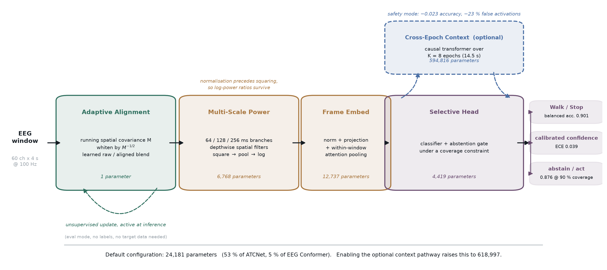
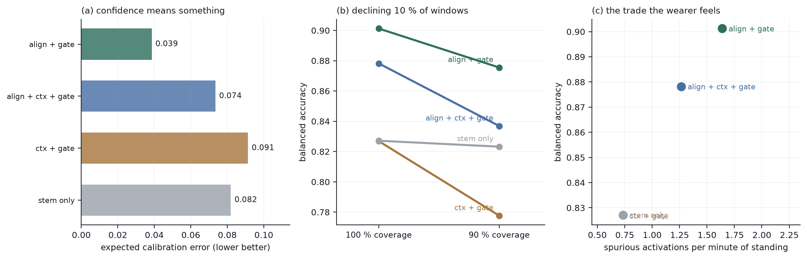
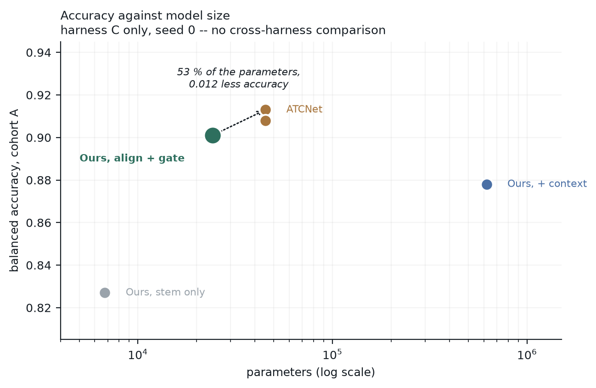
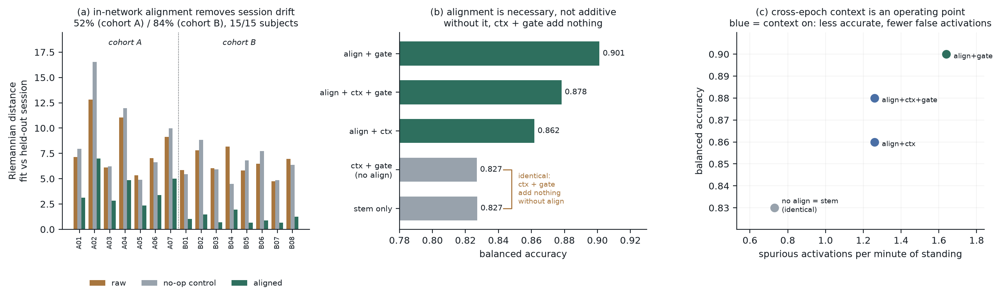
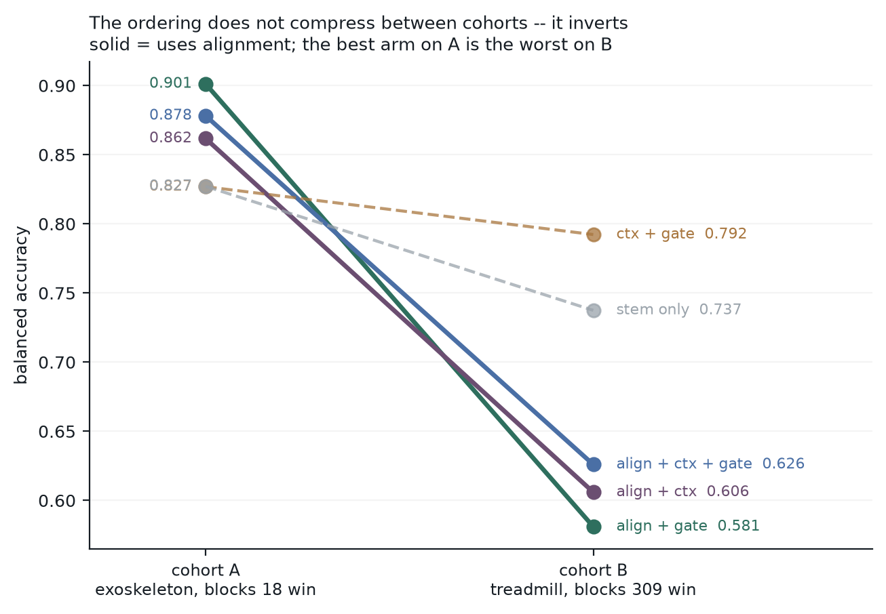
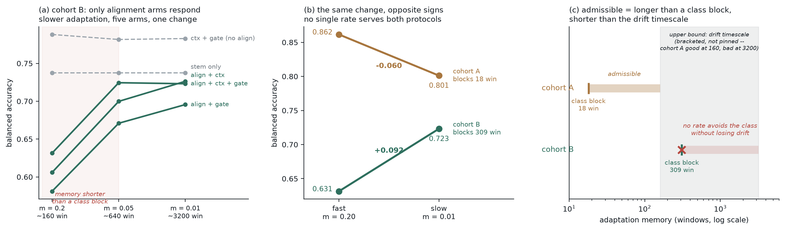
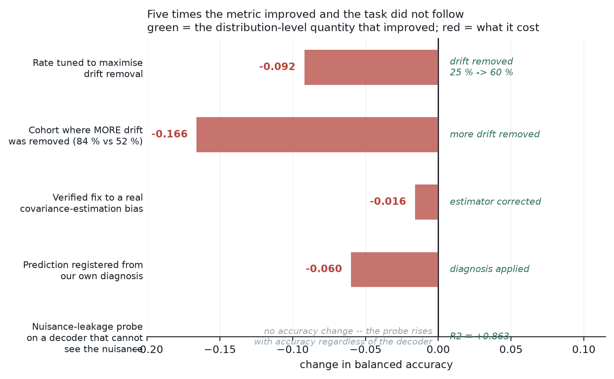

paper/ieee_calmnet.tex
Decoding walk/stop intent from scalp EEG for lower-limb exoskeleton control requires more than per-epoch accuracy: the decoder is fitted once and must keep working weeks later, a false Walk command moves a person's legs, and a decoder that is uncertain should be able to decline. We present an architecture that addresses all three inside the network — a label-free adaptive alignment layer, a ratio-preserving multi-scale power stem, and a selective head under a coverage constraint.
The result is the most compact decoder in our comparison by a factor of two. At 24,181 parameters it reaches 0.901 balanced accuracy on a 7-subject, 9-session longitudinal exoskeleton cohort — within 0.012 of the strongest published baseline evaluated in the same harness, using 53% of its parameters and 5% of a transformer decoder's — and it is the only model in the comparison that also emits calibrated confidence (ECE 0.039) and a trained abstention operating point (0.876 accuracy at 90% coverage). Its alignment layer removes 52% and 84% of session-to-session covariance drift on two independent cohorts, in 15 of 15 subjects (p ≤ 10−4), against a no-op control showing no reduction. On the primary cohort the layer is necessary rather than additive: with it removed, every remaining module together contributes less than the measurement noise.
External validation on an independent treadmill cohort establishes the architecture's operating envelope and yields the result we consider most transferable. In-network adaptation has a failure mode its offline counterpart cannot have: the running estimate tracks whatever is currently streaming, so under a protocol presenting classes in long contiguous blocks the layer whitens away the class itself. We predict the threshold from the protocol and observe it where predicted — slowing adaptation past the class-block length recovers 0.090 to 0.098 on every arm that uses alignment and exactly 0.000 on both arms that do not — and show the condition is two-sided: the rate must be fast enough to track drift and slow enough not to track class, the two cohorts' optima being opposite and each losing 0.06–0.09 at the other's setting. Where class blocks outlast the drift timescale no admissible rate exists. Both timescales are computable from the recording protocol before a model is fitted.
A brain–computer interface driving a powered exoskeleton is not well described by per-epoch accuracy alone. Three properties of the deployment matter as much as the mean score.
Longitudinal drift. The decoder is fitted once and must keep working weeks later. In our primary cohort this is literal: fitted on sessions 1–3, tested on sessions 4–9, recorded across weeks. Montage, impedance and skin contact all change between sessions, shifting the second-order statistics any spatial filter depends on.
Asymmetric cost. A false Walk command moves a person's legs. Balanced accuracy scores that identically to a missed Walk, and cannot distinguish one long false activation from fifty scattered false windows.
No option to decline. A classifier trained only for accuracy must emit a decision for every window. A device acting on a confidence value needs that value to mean something.

The layer maintains a running mean spatial covariance M, applies M−1/2, and interpolates between aligned and raw signal through a learned scalar gate. Two properties distinguish it from a normalisation layer. The update is unsupervised, using only the covariance of incoming windows, so it runs at inference on unlabelled data. And the estimate updates in eval mode, unlike BatchNorm: freezing running statistics is correct when train and test share a distribution, but here they are weeks apart, and freezing discards exactly the adaptation the layer exists to provide.
Each window's covariance is normalised by its own trace before accumulation. Without this the estimate is power-weighted: on a cohort whose majority class carries 1.52× the power, it converges toward the majority class covariance rather than sitting between classes.
The layer's output reaches the classifier. With identical initialisation on held-out windows, stem outputs computed with and without alignment differ by 36% in relative magnitude and their correlation structure by 0.108.
Three parallel temporal resolutions (64, 128, 256 ms), each with its own depthwise spatial filters, then square → pool → log. Amplitude normalisation precedes the squaring so log-power ratios survive. In a separate controlled experiment this ordering was worth +0.134 and +0.174 on band-power features, while the same correction applied to a correlation-only representation — which carries no marginal power — moved accuracy by +0.000, a dose–response consistent with the stated mechanism.
A classifier paired with an abstention gate trained under a coverage constraint, with a full-coverage auxiliary term so the backbone keeps learning from every sample rather than only the covered region.
Cohort A — exoskeleton (OpenNeuro ds007788). 7 subjects × 9 sessions across weeks; 60-channel EEG at 100 Hz; 4 s windows at 0.5 s stride. Fitted on sessions 1–3, tested on 4–9.
Cohort B — treadmill MoBI. 8 subjects × 3 trials; 64-channel EEG at 100 Hz; 2 s windows. An independent laboratory, different sensors, and reversed class balance.
| Cohort | Blocks | Median | Longest |
|---|---|---|---|
| A (exoskeleton) | 109 | 18 win | 126 |
| B (treadmill) | 7 | 309 win | 2211 |
Two ablation arms disable alignment entirely and so never invoke the running estimator; for them momentum and estimator version are inert, and every run is a true repeat. These arms measure the noise floor directly.
| Arm | Transformer | n | Spread |
|---|---|---|---|
| Stem only, cohort B | no | 3 | 0.0000 |
| No-align, cohort A | yes | 3 | 0.0069 |
| No-align, cohort B | yes | 4 | 0.0107 |
The stem-only arm reproduces its score bit-for-bit; arms containing the cross-epoch transformer do not, and the attention path is the only structural difference. Any arm containing the transformer carries ≈0.010 run-to-run noise, and differences below 0.02 in such arms are not interpreted. Conversely, an exact null in the deterministic arm is stronger than "within noise" — that arm has no noise to hide in.
| Arm | Components | Acc | ECE | Acc@90 | FA/min |
|---|---|---|---|---|---|
| Ours | align + gate | 0.901 | 0.039 | 0.876 | 1.64 |
| align + ctx + gate | 0.878 | 0.074 | 0.837 | 1.26 | |
| align + ctx | 0.862 | 0.072 | — | 1.26 | |
| ctx + gate | 0.827 | 0.091 | 0.778 | 0.73 | |
| stem only | 0.827 | 0.082 | 0.823 | 0.73 |

Alignment is necessary, not additive. With alignment removed, context and gate together contribute between 0.000 and 0.007 — against the 0.010 noise floor, indistinguishable from nothing, and an order of magnitude below alignment's own contribution.
Cross-epoch context is an operating point, not a default. It costs 0.023 accuracy and doubles calibration error while cutting spurious activations 23%. Removing it also removes 594,816 of 618,997 parameters, which is what makes the default configuration compact.
| Model | Params | Balanced acc. |
|---|---|---|
| Harness C (this work), seed 0 | ||
| ATCNet | 45,280 | 0.913 |
| ATCNet, rate-matched kernels | 45,280 | 0.908 |
| Ours, align + gate | 24,181 | 0.901 |
| Ours, align + ctx + gate | 618,997 | 0.878 |
| Ours, stem only | 6,768 | 0.827 |
| Harness F (earlier), mean of 2 seeds | ||
| ATCNet | 45,280 | 0.879 |
| EEGNeX | 58,082 | 0.876 |
| ShallowFBCSPNet | 97,120 | 0.867 |
| EEG Conformer | 440,706 | 0.843 |

We do not claim an accuracy improvement. Where both were measured, ATCNet scores 0.913 against our 0.901 — ahead by 0.012, and though close to the noise floor we report it as a loss rather than a tie. What the configuration offers is parity at 53% of ATCNet's parameters and 5% of EEG Conformer's, with calibrated confidence (ECE 0.039) and a trained abstention point (0.876 at 90% coverage) that the baselines do not provide.

| Cohort | Raw | Aligned | No-op | Reduction |
|---|---|---|---|---|
| A (n=7) | 8.372 | 4.082 | 9.173 | 52.0% |
| B (n=8) | 6.479 | 1.074 | 6.309 | 83.9% |
Drift is reduced in 15 of 15 subjects (t=−9.14, p=10−4; t=−20.59, p<10−5). The no-op control shows no reduction in either cohort, establishing that the effect comes from adaptation rather than from the whitening operation or the measurement.
| Components | Cohort A | Cohort B |
|---|---|---|
| align + gate | 0.901 | 0.581 |
| align + ctx + gate | 0.878 | 0.626 |
| align + ctx | 0.862 | 0.606 |
| ctx + gate | 0.827 | 0.792 |
| stem only | 0.827 | 0.737 |

On cohort B the bare stem outperforms the full model, 0.737 against 0.626, and the best cohort-A configuration is the worst cohort-B one. The ordering does not merely compress; it inverts. We report this rather than restricting the paper to the cohort where the architecture succeeds, and devote the remaining results to explaining it — the explanation turns out to be the more useful contribution.
The running estimate tracks whatever is currently streaming. An EMA with momentum m has effective memory ≈1/m batches, or 32/m windows. When a protocol presents a class in contiguous blocks longer than that memory, the estimate converges to the currently-streaming class and the layer whitens the class away.

| Arm | m=0.20 | m=0.05 | m=0.01 | At crossing | Aligns |
|---|---|---|---|---|---|
| align + ctx + gate | 0.626 | 0.724 | 0.723 | +0.098 | yes |
| align + gate | 0.581 | 0.671 | 0.696 | +0.090 | yes |
| align + ctx | 0.606 | 0.700 | 0.726 | +0.094 | yes |
| ctx + gate | 0.792 | 0.782 | 0.783 | −0.010 | no |
| stem only | 0.737 | 0.737 | 0.737 | 0.000 | no |
Every arm using alignment gains 0.090–0.098 as the memory crosses the block length. Neither alignment-free arm responds — the no-align arm to within its spread, and the stem-only arm exactly, reproducing 0.7375 at every setting despite a 160-fold change in adaptation rate. Because that arm is deterministic, this is an exact null rather than an unresolved one.
The condition is two-sided. We predicted, before running it, that the same change would be free on cohort A, whose blocks sit far inside even the fastest memory. It is not.
| Cohort | m=0.20 | m=0.01 | Δ |
|---|---|---|---|
| A (blocks 18 win) | 0.862 | 0.801 | −0.060 |
| B (blocks 309 win) | 0.631 | 0.723 | +0.092 |
The optima are opposite, and error in either direction costs 0.06–0.09. The rate must be fast enough to track drift and slow enough not to track class:
Cohort A satisfies this with a wide margin. Cohort B's 309-window blocks force the rate slow enough that it can no longer track drift, so the admissible band is empty. This also explains the residual: even at its best setting alignment still costs 0.060 on cohort B, because at the only rate that avoids class-tracking there is no drift-tracking benefit left to collect. Both timescales are properties of the recording protocol and computable before a model is fitted.
Domain adaptation and invariance methods are routinely justified by a distribution-level quantity, with task performance assumed to follow. This work provides five counterexamples within a single system, three produced by acting on that assumption ourselves:

Item 4 generalises the rest. Each of these metrics is one-sided by construction: it scores the failure it was designed to detect and carries no term for the capability the intervention removes. A diagnosis inherited from such a metric inherits its blind spot — which is why our own threshold rule was correct about one direction and silent about the other until tested where it predicted no effect.
Ablations are single-seed; with a 0.010 noise floor on transformer arms, single-seed rankings of closely-spaced models are not interpretable, and we avoid making them. The cohorts have 7 and 8 subjects. Cohort B uses 2 s windows against cohort A's 4 s. The two-sided account is fitted to two cohorts with opposite block structure and predicts an interior optimum we have not measured. Finally, the design rule was derived after observing cohort B fail, and although one prediction from it has since been tested out-of-sample, that test falsified it — the corrected two-sided form has not yet predicted anything in advance.
We presented a 24,181-parameter EEG decoder combining label-free in-network session adaptation, a ratio-preserving multi-scale power stem and a selective head, reaching 0.901 balanced accuracy with ECE 0.039 and a trained abstention operating point on a longitudinal exoskeleton cohort, and removing 52–84% of session-to-session covariance drift across two cohorts in every subject tested.
We do not claim an accuracy improvement: a strong attention baseline scores 0.913 in the same harness. What the work establishes is a condition governing when in-network adaptation can help at all. An estimate that adapts at test time tracks whatever is currently streaming, so its rate must exceed the protocol's class-block timescale and remain below its drift timescale. Where those requirements cross, no admissible rate exists and the layer should be omitted rather than tuned — a design-time check rather than a post-hoc diagnosis.